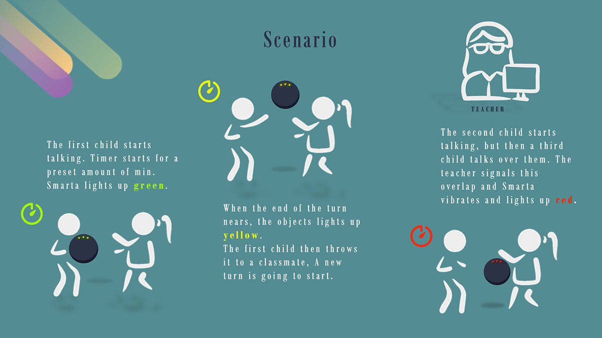

Project information
- Course: Advanced User Interfaces
- University: Politecnico di Milano
- Year: 2020
- Project URL: https://github.com/ste7en/SMARTA-AUI-PoliMi
Smarta is a project developed at Politecnico di Milano for the course of Advanced User Interfaces in 2019/2020 and graded 30/30 cum Laude.
Smarta is a smart object shaped like a ball, to be used by children or during team-building activities. It is designed to help enhance group discussions by complementing our natural approach to turn-taking, and it gives visual and haptic feedback. Also, it makes use of gamification to provide a more engaging user experience.
Smarta helps each participant regulate the time they speak, by implementing a timer mechanism and signalling to the user, through light and vibration, when their turn to speak is about to end. The ball detects when it is passed to another user through an accelerometer and it resets the timer for a new turn.
Design Document Smarta also provides a web interface for teachers to set turn duration times, warn the students by switching a red light when they speak over each other and consult statistics of past discussions.
The core of Smarta is a Raspberry Pi Zero, to which are connected a strip of LED lights and an accelerometer, as well as a vibration motor controlled by a Python backend.